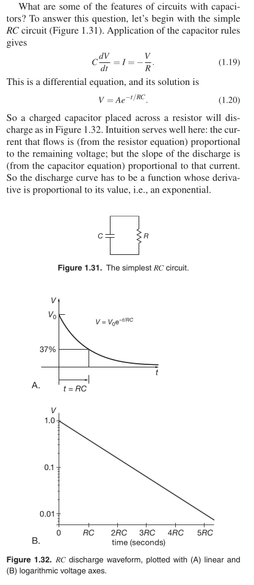

Created at: 2025-02-16

RC circuits can be used to filter a signal by blocking certain frequencies and passing others. The two most common RC filters are the high-pass filters and low-pass filters; band-pass filters and band-stop filters usually require RLC filters, though crude ones can be made with RC filters.
The product RC is called the time constant of the circuit. For R in ohms and
C in farads, the product RC is in seconds. A microfarad across 1.0k has a
time constant of 1 ms; if the capacitor is initially charged to 1.0 V, the
initial current is 1.0 mA. TAOE 3rd
Presenting the “5RC rule of thumb”: a capacitor charges or decays to within
1% of its final value in five time constants.
You might ask the obvious next question: what about V (t) for arbitrary
Vin(t)? (...) In practice, you seldom ask this question. Instead, you deal in
the frequency domain, in which you ask how much of each frequency component
present in the input gets through. TAOE 3rd